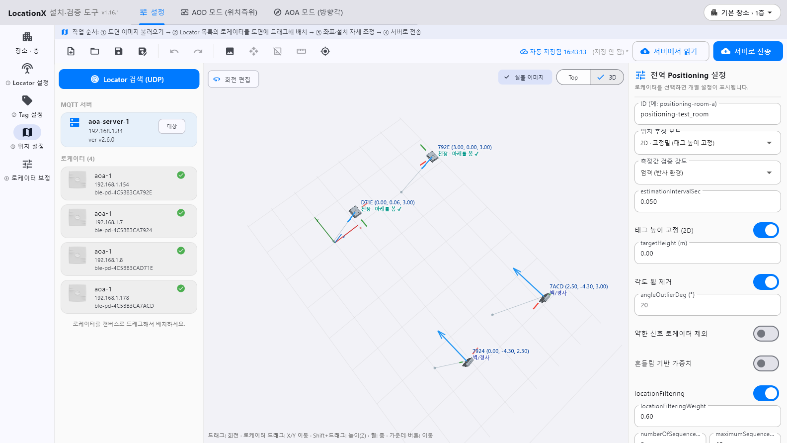
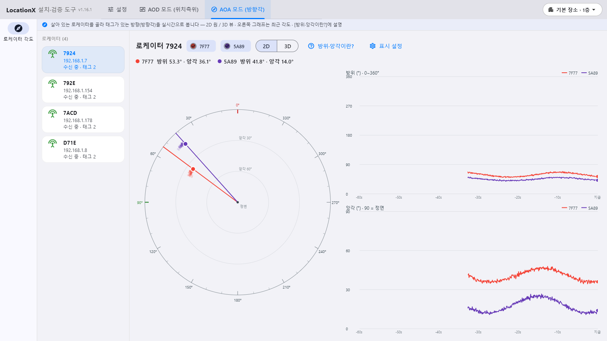

소프트웨어 스택
세 개의 공개 저장소로 로케이터·서버·설정 도구를 관리합니다. 장비 상태를 git으로 선언해 두는 IaC 방식이라, 카드가 고장 나도 새 SD 카드를 구워 스크립트 한 번으로 동일한 장비를 재현할 수 있습니다.
로케이터 구성 저장소
wshan1977/locationx-locator_config
로케이터 카드(라즈베리파이)의 전체 상태 선언. 안테나 보드 UART 수신 → MQTT 각도 발행, 자동 검색·LED 식별·상태 웹 에이전트를 systemd 유닛으로 구동합니다. 굽기 → deploy_locator 더블클릭 → 번호 선택이면 새 카드 구축 완료.
포지션 서버 구성 저장소
wshan1977/locationx-mqtt_server_config
MQTT 브로커(mosquitto) + 위치 계산 엔진 + 설정 API 서버 + 외부망 중계(cloud agent)를
담은 서버 카드 구성. 여러 로케이터의 각도를 융합해 controlbit/aoa/position으로
위치를 발행합니다.
설치·검증 도구 (Windows)
LocationX Install & Verify Tool
장비 검색 → 도면 위 로케이터 배치·자세 보정 → 서버 전송까지 한 화면에서 하고, AOD 모드(위치측위)와 AOA 모드(방향각)로 동작을 검증합니다. 태그 송신 주기 설정과 펌웨어 무선 업데이트(PC 또는 로케이터 경유)도 지원합니다.
위치 시각화 뷰어
Position Visualization GUI (Python)
MQTT 위치 데이터를 구독해 Top view와 3D 공간에서 태그 위치를 실시간으로 보여주는 Python GUI. 데모·검증 단계에서 측위 품질을 눈으로 확인할 수 있습니다.

설정 — 배치·보정
도면 위 로케이터 배치 · 자세(3D 회전 편집) · 전역 위치 계산 설정 · 서버 전송

AOD 모드 — 위치측위
도면 위 2D/3D 태그 위치 · 로케이터별 각도 점선 · 태그 목록으로 표시 선택

AOA 모드 — 방향각
로케이터별 방위·앙각을 원·3D·흐르는 그래프로 · 설치 방향과 반사 진단